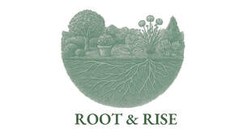

Trade Mark Journal No.2025/040 3 October 2025
UK00004267406 22 September 2025 (1)

- Class 1
- Compost; Compost [fertilizer]; Potting compost; Compost, manures, fertilizers; Composts; Compost activators; Potting composts; Organic composts; Mulch for soil enrichment [fertiliser]; Seaweed based compost; Mixtures of chemicals and microorganisms for fertilizing compost; Organic manure; Manure; Fertiliser for soil and potting soil; Organic potting soil; Compost mixtures enriched with organic substances; Manures for flowerpot plants; Horticultural growing media composts; Fertilisers for soil and potting soil; Mulch for soil enrichment in horticultural environments; Potting soil; Manures; Topsoil; Mulch for soil enrichment in agricultural environments; Fertilizers and manures; Perlite for use in horticulture; Manures obtained by the treatment of refuse with earthworms; Fertilizers for soil; Manure for agriculture; Agriculture (Manure for -); Soil additives [fertilising]; Biochar; Humus; Horticultural potting mixtures; Controlled-release fertilizers for gardening; Hydroponic fertilizers; Seaweeds for use as a fertilizer; Soil amendments for horticultural use; Garden feeds [fertilizers]; Organic fertilizers; Natural manure; Bio-fertilizer; Seaweed extracts for use as a fertilizer; Plant fertilizers; Top dressings [humus] for lawns; Fertilizers, lawn fertilizers, grass fertilizers; Organic fertilisers; Liquid manure substitute; Fertilisers; Fertilizers; Liquid fertilisers; Compound fertilisers; Liquid phosphate for foliar application to agricultural crops; Grass fertilizers; Seaweeds [fertilizers]; Fertilisers, and chemicals for use in agriculture, horticulture and forestry; Fertilizers for the land; Land fertilizers; Fertilizers for household plants; Fertilisers consisting of compounds of nitrogen; Fertilizers for agriculture made of seaweed; Mixed fertilizers; Complex fertilizer; Nitrogen biofertilizers; Foliar fertiliser for application to crops during periods of stress; Biofertilizers for use in soil treatment; Natural fertilizers; Foliar fertiliser for application to crops during periods of rapid growth; Fertilizers for domestic use; Mixtures of chemicals and natural materials for use as horticultural fertilizers; Soil conditioners for inoculation into the soil preparatory to the sowing of seeds [other than sterilising]; Micronutrients for application to crops; Mixtures of chemicals and natural materials for use as agricultural fertilizers; Biostimulants for plants; Biostimulants being plant growth stimulants; Multi-nutrient fertilizers; Biofertilizers; Non-chemical bio-fertilizers; Plant nutrients; Seaweed extract for use as a growth stimulant on plants; Soil conditioning preparations for enhancing the growth of horticultural products; Soil conditioning preparations for enhancing the growth of agricultural products; Nutritional substances [fertilizers] in liquid form for use in agriculture.
WildWyn Ltd